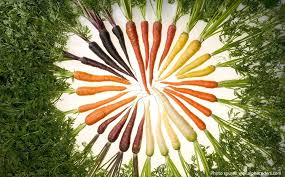

Welcome To Bootstrap Workshop
Some Favorites
Wild & Wacky Vegitables
Vegetables that grow naturally without any cultivation or care are called wild vegetables. These plants mainly grow in forests, wilderness, edges of farmlands, and barren fields. In the early days of the monsoon season, these vegetables are available for consumption. Along with being vegetables, a majority of them are also medicinal plants.
Most of the popular vegetables that we know of are recent introductions in our kitchens. Indians have been eating wild vegetables for thousands of years, but unfortunately, we lost the track somewhere at the dawn of modern times. Tribals and rural Indians still value these wild vegetables. An interesting fact is that some wild vegetables have a dedicated cult following in urban areas & big cities where they are sold in special markets.
Some Diseases
| Veggies | Disease |
|---|---|
| Beets | Beeturia |
| Carrots | Carotenois |
Causes of beeturia
Noticing red or pink urine for the first time can be scary, and you may think the worst. But beeturia is a harmless condition.
Discoloration is due to a compound in beets called betanin, which is what gives the vegetable its red pigment. Some people have difficulty breaking down this pigment. After you consume beets, betanin travels through the body and eventually makes its way to the kidneys. Here, it is flushed from the body, resulting in pink or red urine.
Even though beeturia isn’t usually a cause for concern and dissipates on its own, red or pink urine after eating beets can sometimes indicate problems with your health. Therefore, consult a doctor if you have discolored urine every time you eat beets.

.jpeg)
